👤Characters
📦Props
📍Places
🎨Look
✏️Sketches
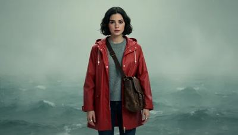
Ines ▾v1 · rain gear ▾＋ New
appearancea young woman in her mid-twenties, short dark wavy hair, light freckles, slim build, a thin silver ring on her left hand
outfita red hooded raincoat over a grey knit sweater, dark jeans, a worn leather satchel
body1.68 m · slim · not fitted · Fit ▶ · ⚙ body sheet
voiceEmma · British, female ▾ · 🎙 New voice…
hero ✓references 4A-pose front ✓back ✓body ○voice ✓1 to go
MakeEdit
Framing
portraitwaist-upfull bodyA-pose frontA-pose backcoverage cell…
This picture only
hood up, soaked by the rain
Look
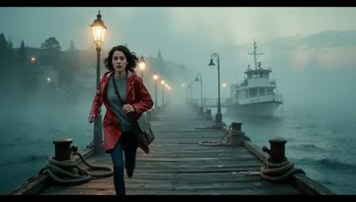
★ Harbour noir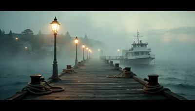
Daylight＋
noneReferences Ines's 4 by themselves · ＋ from the Bin
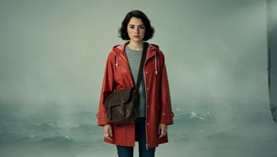
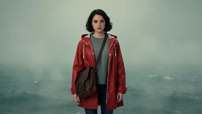
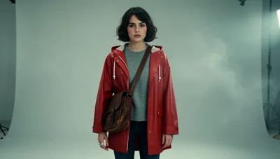
Model
FLUX.2 devKlein 9BKrea 2…
draft 960×544 · count 4 · random seeds
Give Ines a look ▶
≈ 90 s each · 6 min for 4 · references downscaled to 512² to stay in VRAM
bin/world/character/Ines/v1all 11heroreferencesA-posecandidates
Ines · full body · step 3/8
queued
★ hero
ref
ref
ref
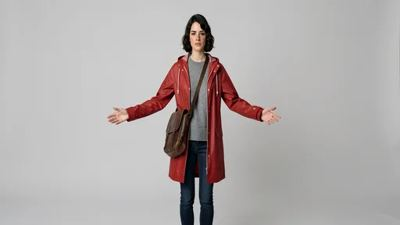
A-pose front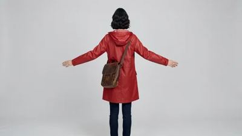
A-pose back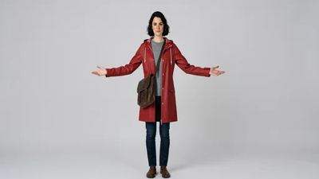
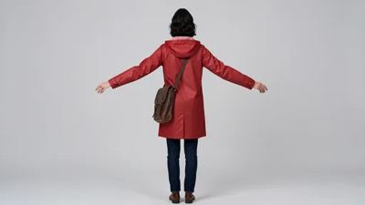
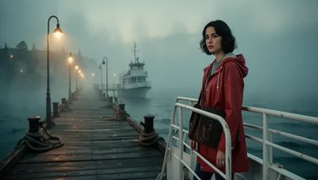
A-pose front · Klein 9B · 960×544
The feet touch the frame's edge: the body fit needs the ankles. Make it again, framed whole ▶
★ Make it the hero✓ Use as a reference● the A-pose frontUse as the A-pose backEdit ▸Trash
home: bin/world/character/Ines/v1 · made by the A-pose run, 2 seeds · lineage ▸